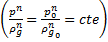

| Volume 2 - Year 2015 - Pages 7-13 | View PDF (Full-text) |
| DOI: 10.11159/jffhmt.2015.002 | Linked References |
| ISSN: 2368-6111 | |
Transient Phenomena in Liquid/Gas Flow in Pipelines
Zohra Ouchiha1, Abderahmane Ghezal1, S. Mostafa Ghiaasiaan2
1Faculty of Physics, USTHB, BP 32, El Alia, BEZ, 16111, Algiers. Algeria
zouchiha@yahoo.fr, abdghezal@yahoo.fr
2G.W. Woodruff School of Mechanical Engineering Room 308
J. Erskine Love Manufacturing Building, Georgia Institute of Technology; Atlanta, GA 30332-0405
mghiaasiaan@gatech.edu
Abstract- Mass continuity and the equation of motion govern the flow of a fluid in a pipeline. Such flows are also affected by the elasticity of the pipe however. The effect of elasticity of the pipe can be taken into consideration by assuming it to be linear with constant mechanical properties. However, often the elasticity of the pipe is neglected in the case of gas flow. To study transitions in liquids, furthermore, this property is integrated and added to the geometrical characteristics of the pipe wall in the expression of the velocity of sound. In this study we apply the method of characteristics to investigate the transient phenomena in a two-phase homogeneous flow. The analysis is based on models that take into account both the geometry and properties of the pipe, such as the elasticity of the walls, as well as the physical parameters such as the flow quality, namely the mass fraction of the gas in the two-phase mixture flow.
Keywords: Pressure wave, Transitions, MOC.
© Copyright 2015 Authors - This is an Open Access article published under the Creative Commons Attribution License terms. Unrestricted use, distribution, and reproduction in any medium are permitted, provided the original work is properly cited.
Date Received: 2015-01-24
Date Accepted: 2015-08-10
Date Published: 2015-09-15
1.Introduction
Studies of the transient flows often focus on a single-phase fluid such as highly compressible gases, or, pure incompressible liquids, such as those classified in the category of water hammer phenomenon. Moreover, if the elasticity of the pipe is taken into consideration, it is assumed to be linear, with constant mechanical properties. Unfortunately, often the elasticity property of the pipe is neglected in the case of a gas flow, whereas, to study transitions in liquids this property is integrated and added to the geometrical characteristics of the pipe wall in the expression of the sound velocity. However, for pipes that exhibit significant viscoelastic effects (for example, plastics such as PVC and polyethylene), it has been shown that these effects can influence the wave speed in pipes and must be accounted for if highly accurate results are desired.
Generally, in industrial fluids including mixed fluids of different phases, the presence of even a small amount of free gas significantly reduces the wave velocity in comparison with the value it would have had if the fluid was in a pure liquid state only. Therefore, if the mixture of fluids is treated as a pseudo-fluid, the propagation of the pressure wave is quite slow and we cannot detect real changes of the fast flow regime if the analysis is limited to flow velocities below the real speed of sound in the liquid. Chaudry et al. [1] proposed to consider the gas / liquid mixture as a pseudo-fluid in the case where the void fraction is low. Studies conducted by Henry [2] and van Wijngaarden [3] are good references which have generated significant results on the acoustic velocity in a bubbly flow. Hadj-Taieb [4] used mathematical models to study transitions in a homogeneous two-phase medium. The density ρ and the sound velocity were assumed to be pressure dependent, and the flow quality was assumed to remain constant. This latter condition is not always valid however. Mori et al. [5] have conducted a study in which the void fraction is assumed to depend on the pressure rise in a two-phase flow. Padmanabhan [6] states that the average void fraction varies necessarily in the case where a pressure gradient exists in a long pipe.
In this work, we apply the method of characteristics to investigate the transient phenomena in a two-phase homogeneous flow. The analysis is based on models that take into account both the mechanical parameters of the pipe like the elasticity of the walls, and physical parameters such as the flow quality (i.e., the gaseous mass fraction of the flow mixture, denoted as θ).
2. Physical Model
The mixture considered is a liquid carrying uniform size bubbles of gas, and is assumed to be polytropic. The equations of continuity and momentum that are commonly used are:
The study consists of two parts. The first part can be referred to as a rigid model in which the wall elasticity and the compressibility of the liquid are neglected. The second part of the study represents a quasi-rigid model in which the elasticity of the wall and the compressibility of the liquid are included. In both cases, the numerical simulation tests are performed on pipes of length L = 35.7 m with a diameter d = 0.0196 m. The friction effect is represented in terms of the Darcy-Weisbach constant λ. These equations are solved by the method of characteristics (MOC), as explained in [7, 8].
3. Results
3. 1. Results for the Rigid Model Case
In the rigid model the elasticity of the wall is assumed to have no effect and the compressibility of the liquid in comparison with that of the gas is neglected. The cross sectional area of the pipe is constant and equal to S0. The density of the homogenous mixture can be represented as:
Note that the gas in the bubbles undergoes a polytropic process due to the effect of friction, whereby gives the following relationship: The celerity of the sound which is plotted in Figure 1 can be represented by the following expression:
The comparison between the results obtained from a study based on the current MOC method, shown in Figure 2-a, and the numerical and experimental results of [4] depicted in Figure 3, leads to the following observations.
C1-Amplitude:
- - In Figure 3, the amplitude of the pressure wave obtained in [4] based on a rigid model by numerical simulation using the Newton-Raphson iterative technique is around 0.7 MPa.
- - In experimental results the amplitude is less than 0.4 MPa as shown on the Figure 3.
- - Results obtained in the present investigation (MOC) depicted in Figure 2-a, is much closer to the experimental data and shows an amplitude which is around 0.37 MPa.
- - C2- Number of periods in 0.5s:
- - Also as noted in Figure 3, the numerical results of [4], show that there are 10 pressure oscillations during a time span of 0.5s. In fact, the water hammer period is shorter than the experimentally measured period, because in the homogeneous flow model as developed by the aforementioned authors the rapid expansion of the air contained in the pipe is adiabatic. The length of the water hammer period associated with polytropic exponent calibration is addressed by Sang-Gyun et al [9].
- - In the experimental results which are displayed in Figure 3, there are only four pressure oscillations.
- - Our work, in agreement with the experiments, also predicts that there are only four pressure oscillations in the 0.5s period, as shown in Figure 2-a.
Figure 2. Evolution of the pressure.
From the aforementioned observations C1 and C2 we can conclude that the results obtained with the method of characteristics are closer to the experimental data and therefore better reflect reality than the digital model of [4]. Moreover, the authors of [4] have concluded that the rigid model they have proposed for the simulation of a two-phase flow is not valid when the flow quality is low because the predicted speed of sound becomes excessively high. In order to comply with the CFL condition, the time increment dt becomes smaller and will induce a water hammer period refinement. One may conclude that the predicted pressure amplitudes are too high and therefore are unphysical. This is in contradiction with the classical concept of water hammer.
3. 2. Results for the Quasi-Rigid Model
In the quasi-rigid model case, the liquid compressibility and the pipe's elasticity are considered to be too large to be neglected. In addition, the cross-section S, the density ρ and the speed of sound 'a' all dependent on pressure as can be seen in Figures 4 and 5. Usually, the pipe's elasticity is deduced from the following equation:
In which E is Young's modulus, c is the pipe constraint factor, and e is the wall thickness.
It is similar to the expression that is given by [10].After integration, we find the following expression for the cross-section S as a function of pressure p and thereby the density of the mixture:
where Kl is the compressibility of the liquid.
As an application example, we will use the model which has already been tested by [4] as a reference for a validation of our simulation. Validation will be done on the classical concept of water hammer.
The physical problem is defined as follows conditions: u is the fluid velocity, L=35.7 m, d=0.0196 m, E = 0.9 1011 Pa, e = 0.001 m, c = 0.9, pe = 0.263 MPa (Initial pressure) and Q0 = 0.000031 m3/s. The inlet mean velocity is found from ue(x=0) = 4Q0/(П d2) and θ = Mg/(Mg+ Ml) = 0 (i.e., the fluid is pure liquid free of gas), ρ l = 1000 kg/m3, and ρ g = 1.29 kg/m3.
Figure 6 shows a validation of the quasi-rigid model tested on the water hammer effect. When the fluid is clean with no gaseous contamination (θ = 0), the evolution of the pressure wave obtained by the method of characteristics is much close to the results obtained experimentally than that obtained by the finite difference simulation scheme of [11].
In conclusion, we can deduce that the simulation of two-phase flow for the cases of rigid and quasi-rigid models with the method of characteristic gives better results than those given by the finite difference scheme of Lax Wendroff as presented by [4].
It should be noted that if E ≈ ∞ then S=S0 = const., and if Kl ≈ ∞ is also assumed, then the liquid compressibility vanishes and the equation for the density of the liquid becomes independent of the pressure. The model therefore will resemble the case of a rigid model.
Generally, we learnt from these two models that the pipe elasticity feature is crucial as it may constitute the temporary palliative reservoir where supplementary amount of the expanding fluid is stored in the vicinity of the triggered water hammer process. On the other hand, Meniconi et al [12] confirmed the complete failure of Joukowski's theory which neglects the effects of viscoelasticity of pipe material and friction. Therefore, MOC technique has been found to be more adaptive than the finite difference scheme of Lax Wendroff in the treatment of the set of equations at the boundary limits, especially at the closure valve zone.
4. Impact of the Physical Parameters ue, pe and θ
Often it is assumed that the presence of a small amount of gas in the fluid justifies the assumption that the pipe is inelastic, and consequently the rigid model is valid. Streeter and Wylie [13] have supported this assumption. However this issue is complicated and the validity of the aforementioned observation depends among others on the flow quality. To better understand this issue, we focus on the conservation equations and in particular the continuity equation.
The continuity equation in the steady state for a one-dimensional flow field is:
Hence
Let us consider a case where the conditions at the entrance of the pipe are as follows:
p(x = 0) = pe = 263000 Pa, u(x=0) = ue = 0.1027 m/s and ρ e = ρ (p = Pa).
The conditions mentioned above have a crucial role in the stability of the mass balance in the pipeline. Whalley [14] suggested that the homogeneous model can be reliable and give good results if the mass flux satisfies G= >2000 kg/(m2.s).
Padmanabhan [6] stated that apart from the simplicity offered by the homogenous model equation in its implementation, this model is not the most widely recommended technique for simulating two-phase flows. For this, the following steps will be devoted to defining the most appropriate physical conditions for best results with the homogeneous model. We ask the following questions: What are the physical conditions that are favorable to the application of the homogeneous flow model in the presence of a wave which propagates in the flow?- Also, what are the distinctions between homogeneous and non-homogeneous flow models?
Martin et al., [15] and also Martin and Padmanabhan [16] assumed that the peak pressure in a two-phase flow of a flow field which has a large void fraction, as for example in the slug flow regime, can be easily found by solving the homogeneous flow model equations with the method of characteristics.
The applications of the method of [4] in the case of a relatively high quality homogeneous flow (θ max = 0.0314) as presented in the study of [6], leads to the results that are shown in Figures 7 and 8. In the model of [4], the initial conditions are defined by p (x = 0) = pe = 263000 Pa and u (x = 0) = ue = 0.1027 m/s, we see that for several values of θ, the homogeneous density may not exceed ρ max = 1000 kg/m3. At θ max = 0.0314, corresponding to the homogeneous case treated by [6], the density in Figure 7 appears to be approximately constant and very low, equal only to 39.51 kg/m3. In contrast, with a very low flow quality of θmin = 10-7, the density is maximum and equal to about 1000 kg/m3. At other intermediate values of θ, we notice the non-linear profile of the density.
Changes in the density and the sound celerity as a function of pressure which are shown in Figures 7 and 8, confirm that the rigid model for two-phase flow, in which the liquid phase is incompressible, presents a mass flow less than the minimum required for the applicability of homogenous flow assumption, namely 2000 kg/(m2.s). For this reason the model of Hadj-Taieb [4] is not perfectly suited for the simulation of our aforementioned homogeneous flow case. This is because the mass flux at the entrance is, G = = 102.5 kg/(m2s), which is considerably lower that the aforementioned lower limit of mass flux 2000 kg/(m2s) for the suitability of homogeneous flow model. We may emphasize that the rigid model simulation in the case [4] might be adequate at higher mass fluxes.
We now examine the question about the effects of the initial pressure pe, and the flow quality. Figure 9 shows the effect of ue, which is manifested by an increase in the maximum of the velocity profiles mainly at low pressures. Furthermore, by increasing the value of the flow quality θ, the velocity increases and reaches 80 m/s, at θ = 0.0314.
Reducing the initial pressure from pe = 263000 Pa to 105000 Pa, we can see in Figure 10 that the profiles ρ(p) are approximately similar to those shown earlier in Figure 7. Clearly, the change in pe leads to some differences which appear when comparing the profiles of u(p) shown in Figures 8 and 11.
However, analysis of both Figures 10 and 11 alone shows that the conditions for applying the homogeneous model are not ideally satisfied, because the mass flux G remains lower than 2000 kg/(m2.s).
A similar observation can be made when the pressure at the pipe inlet is increased to pe = 550000 Pa, in which case the density remains unchanged while the fluid velocity increases, particularly when the flow quality is high, θ = 0.0314. We can see this on Figures 12 and 13. However, the condition proposed by [14] remains unsatisfied because we still have G = < 2000 kg/(m2s).
5. Conclusions
In this study we applied the method of characteristics (MOC) to the analysis of homogeneous two-phase flow in pipes. We compared the predictions of the MOC method with experimental data and the predictions of some other methods. We observed that the simulation of two-phase flow for the cases of rigid and quasi-rigid models with MOC gives better results than those predicted by the finite difference scheme of Lax Wendroff. We also examined the effect of inlet velocity (ue) and pressure (pe), as well as the flow quality, and showed that the impact of these three factors is still unable to overcome the problems of the inapplicability of the homogeneous mixture model as long as the mixture mass flux remains below the well-accepted value of 2000 kg/(m2s).
6. Acknowledgement and Dedication
The authors would like to thank the reviewers for their helpful comments and recommendations.
The lead author would also like to dedicate this work posthumously to Professor Bendaoud Mohamed, former Dean of the Faculty of Physics at USTHB (Algeria), for his extremely helpful support and his human feelings.
References
[1] M. H. Chaudry, "Applied Hydraulic Transients," Van Nostrand Reinhold, New York, 1987. View Book
[2] R. E. Henry, "Pressure Wave Propagation in Two-Phase Mixtures," Chemical Engineering Progress Symposium Series-Heat Transfer Conference, Mineapolis, Augsut 3-6, 1969, vol. 66, no. 102, pp. 1-10. View Article
[3] L. van Wijngaardan, "On the Equations of Motion for Mixtures of Liquid and Gas Bubbles," Journal of Fluid Mechanics, vol. 33, no. 3, pp. 465-474, 1968. View Article
[4] A. Hadj-Taieb and T. Lili, "Transient flow of homogenous gas/liquid mixtures in pipelines," International Journal of Numerical Methods for Heat & Fluid Flow, vol. 8, no. 33, pp. 350-368, 1998. View Article
[5] Y. Mori, K. Hijikata and A. Komine, "Propagation of Pressure Waves in Two-Phase Flow," International Journal of Multiphase Flow, vol. 2, no. 2, pp. 139-152, 1975. View Article
[6] M. Padmanabhan, "Wave propagation through Flowing Gas-Liquid Mixtures in Long Pipelines," Phd Thesis, Georgia Institute of Technology, Aug. 1976. View Article
[7] Z. Ouchiha, J. C. Loraud, A. Ghezal, M. Kessal, A. Benzaoui and S. M. Ghiaasiaan, "An investigation of highly pressurized transient fluid flow in Pipelines," Interntaional Journal of Pressure Vessels and Piping, vol. 92, pp. 106-114, April 2012. View Article
[8] Z. Ouchiha, A. Ghezal and S.M. Ghiaasiaan, "Transient Flow of Fluids: Some Applications of the Navier Stokes Equations," in Navier-Stokes Equations: Properties, Description and Applications, R. Younsi, ED. Nova Science Publishers, 2012, pp. 307-312. View Book
[9] K. Sang-Gyun, L. Kye-Bock and K. Kyunp-Yup, "Water hammer in the pump-rising-pipeline system with an air chamber," Journal of Hydrodynamics, vol. 26, no. 6, pp. 960-964, 2014. View Article
[10] L. van Wijngaardan, "On the Structure of Shock Waves in Liquid-Bubble Mixtures," Applied Science Research, vol. 22, no. 1, pp. 366-381, 1972. View Article
[11] P. D. Lax and B. Wendroff, "Systems of conservation laws," in Communication on pure and applied Mathematics, vol. XIII, pp. 217-237, 1960. View Article
[12] S. Meniconi, B. Brunone and M. Ferrante, "Water-hammer pressure waves interaction at cross-section changes in series in viscoelastic pipes," Journal of fluids and structures, vol. 33, pp. 44-58, 2012. View Article
[13] V. L. Streeter and E. B. Wylie, Hydraulic Transients. FEB Press, Ann Arbor, MI, 1982.
[14] P. B. Whalley, "Two Phase Flow and Heat Transfer," Chemical Engineering vol. 5, no. 1-2, 1996. View Article
[15] C. S. Martin, M. Padmanabhan and D. C. Wiggert, "Pressure Wave Propagation in Two-Phase Bubbly Air-Water Mixtures," Second International Conference of Pressure Surges, City University, London, England, 1976, paper C1, pp. 1-16. View Article
[16] C. S. Martin and M. Padmanabhan, "Pressure Pulse Propagation in Two-Component Slug Flow," Transactions of the ASME, Journal of Fluids Engineering, vol. 101, no. 1, pp. 44-52, 1979. View Article